UDN
Search public documentation:
FrequentlyAskedQuestionsJP
English Translation
한국어
Interested in the Unreal Engine?
Visit the Unreal Technology site.
Looking for jobs and company info?
Check out the Epic games site.
Questions about support via UDN?
Contact the UDN Staff
한국어
Interested in the Unreal Engine?
Visit the Unreal Technology site.
Looking for jobs and company info?
Check out the Epic games site.
Questions about support via UDN?
Contact the UDN Staff
よくある質問
概要: Unreal Ed をこれから使う方のための FAQ Michiel Hendriks Andrew Moise (DemiurgeStudios?)により更新、使用されていない文書へのリンクを削除。原作者Jason Lentz (DemiurgeStudios?)UDNを使用する最善の方法は?
UDN サイトのコンテンツ部分では、レベルデザイナーが ins や Unreal Engineについて学ぶ助けになるよう力を注いでいます。UDN サイトから探していものを見つける方法は多数あります。次のリンクがその出発点になるでしょう｡| ウェブ検索 - 検索ツールは各ページの左上の角にあり、内容部分のすべてのページを検索するか、UnEdit メーリングリストの全アーカイブを通して検索できます。UnEdit アーカイブを通して検索すると特殊な問題の解決法を探すのに特に役立ちます。UnEdit メーリングリストに入会するには、ここをクリックしてください。 または、mod 開発者は、mod 固有リソースの 公開Modリソース? ページを参照してください。 |
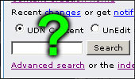 |
| 分類フォーム - これはページ下部にある表で、関連したトピックの残りをリンクとして一覧にしたものです。このリンクに従ってUDNサイトは、自動作成によりそのトピックに関連した文書をすべて目次の形式でリストアップしたページを作成します。すべてのトピックスのリストを見るには、分類フォーム?文書を参照してください。 | 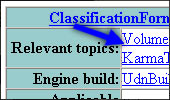 |
屋外領域を作成するには?
納得のいく屋外環境を作成するには、いくつかのテクニックが存在します。それらのテクニックの使用方法を説明した３つの文書を紹介します。| テレイン テュートリアル - Unreal Ed には素早く簡単に風景を作成する特殊ツールが備えられています。このツールは、Terrain Editor(テレインエディタ) と呼ばれています。テレイン テュートリアルJP?では、すべての機能の利用方法およびテレインのレベル設定の過程を説明します。 | 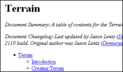 |
| マップ用例スカイゾーン - SkyZonesは以前に、Unreal で SkyBoxes?(スカイボックス)、SkyCylinders(スカイシリンダー)、SkyDomes (スカイドーム)などを作成していました。このマップ用例の文書では、各種類のSkyZone(スカイゾーン) の作成過程を、利点に焦点を当てながら段階的に見ていきます。 | 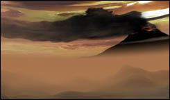 |
| マップ用例高度照明 - このマップ用例では屋内と屋外両方での照明技術をいくつか紹介しています。屋外照明効果には、林冠の影に差し込んだ光線、単独の木の複雑な陰、なだらかな起伏のある雲の陰、地霧や水の腐食などが含まれます。 | 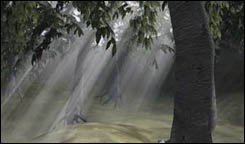 |
動いている部分をレベルに追加するには？
移動ジオメトリをレベルに追加するには、ムーバーまたは Karmaアクタを追加する２つの方法があります。ムーバーは一連の定義済みのキーフレームに沿って動く特殊な静的メッシュで、Karmaアクタは、現実的な物理シミュレーション用の物理プロパティが備わったメッシュです。２つの移動ジオメトリについては次に説明します。| ムーバー テュートリアル - この種類のジオメトリは、ドア、回転している扇、上昇しているプラットフォーム、または起動するごとに一貫したパスに移動したい物に対して最適です。 | 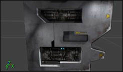 |
| Karma入門 - Karmaアクタはさらに複雑で、結果としてより多くのことができます。ここではKarma機能のすべてを説明している文書を紹介します。 | 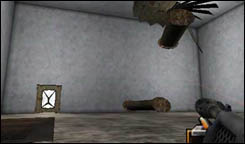 |
複雑なシーンの作成、またはレベルのパフォーマンスを向上させるには？
複雑なシーンは、非常によく最適化されたレベル内で静的メッシュを使用しUnreal で作成されます。静的メッシュは、第三者モデリングプログラムで最初に作成されたジオメトリで、エディタにインポートされます。極めて早くレンダリングし、結果としてレベルに追加する際に優れたディテールを実現します。レベルが完全に最適化されるとさらに複雑な環境を作成することができます。次の２つの文書は、静的メッシュの使用法の基礎およびエディタ内からのレベルの最適化について説明しています。| 静的メッシュ テュートリアル - StaticMesh? Browser(静的メッシュブラウザ) の使用法および静的メッシュについて説明します。静的メッシュはその作成のしやすさ、敏速なレンダリング能力により、複雑な環境作成には不可欠です。 | 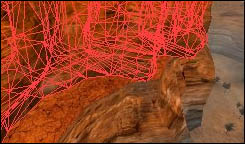 |
| レベル最適化 - 最適化は、コードの合理化、モデルの微調整やそのレベル内でなど、いくつかのレベルで実行できます。レベルデザイナーとして、レベルの円滑な作動を確認するためのツールがいくつかあります。ここでは、レベルを適切に最適化するためのガイドラインについて説明します。 | 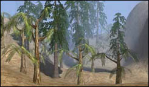 |
どのような特殊効果を作成できる?
Unreal Ed 内では様々な特殊効果を作成できます- その数は一つの文書では記載しきれないほどです。ここでは、どこから始めるのが良いかを紹介します。| パーティクル システム例 - Unreal Engineはパーティクル システム?作成のために非常に強力なシステムを備えています。[[パーティクル システム例]の文書では、爆発、稲妻、ガラスの破壊や滝を含め、多様な効果の作成方法を知ることができます。 注意: そこでの例は、新しい Particle System Editor(パーティクル システム エディタ) を使用していることを想定しています。エミッタ編集の古い型を使用した追加例については、 エミッタ例?を参照してください。 | 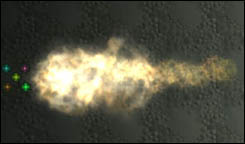 |
| 「マテリアル テュートリアル」 - Unreal Ed には、最初は複雑と思われるテクスチャ操作ツールが装備されており、環境反射、振動やテクスチャ パンなどさらに多くのすばらしい効果の作成にも使用できます。ここでは、マテリアル ブラウザの使用法や各マテリアルの種類について説明します。 | 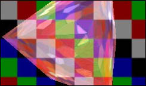 |
| ミラーとワープゾーン - 特殊 BSP ゾーンとサーフェスで、レベル内にミラーとワープゾーンを作成できます。ミラーは、本物の鏡のようにすべてのものを反射しますが、いくつかの制限があり、設定に関連した特別な方法を用います。ワープゾーンは他の空間にテレポートするだけではなく、その空間のウィンドウとしても作動します。この文書ではその両方の機能の使用法について説明します。 | 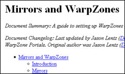 |
| テレポータ - テレポータは、プレーヤーや ボッツをある場所からある場所まで、またはマップ間(レベル トランジション?文書を参照)でもテレポートできるアクタです。テレポータはプレーヤーの速さやレポートの位置を変更のために設定でき、片道にしたり、目的地をランダムに選択することもできます。 | 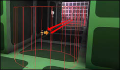 |
| フルイド サーフェス テュートリアル - FluidSurfaceInfo?（フルイド サーフェス情報)は、オブジェクトがそこを通ると水のように波紋をたてて作用するアクタです。レベルにあるFluidSurfaceInfoの設定の仕方については、この文書を参照してください。 | 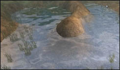 |
| ExampleMaps(マップ用例) - この他の具体的な効果については、マップ用例?ページを参照してください。レベルでの各種効果の設定の仕方の例やダウンロードができ、これに沿ったマップ付きの講座の文書もあります。 |  |
レベルをプレーヤーに反応させるには?
ゲームのコードに機能を追加する以外に、UnrealEdを使用してレベルをプレイヤーに反応させるには３つの方法があります。トリガ、ムーバー、AI (人工知能)、ボッツの追加です。各トピックの詳細については下記のリンクをご覧ください。| トリガ テュートリアル - トリガはUnrealがイベントを行うために使用するものです。いくつものトリガが利用でき、多様な行動を動作の中に織り込むことが可能です。 | 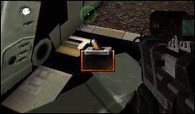 |
| ムーバー テュートリアル - この種類のジオメトリは、ドア、回転している扇、上昇しているプラットフォーム、または起動するごとに一貫したパスに移動したい物に対して最適です。 | |
| スクリプト化したシーケンス テュートリアル - ここでは、レベルのボッツへの人工知能の設定の紹介をします。パスノードの設定の仕方についてはナビゲーションAI?文書も参考にしてください。交流やプレーヤーとの出会いでレベルのAIを使用し、逃げたり、攻撃やアニメーションの再生をするようにボッツを設定できます。 | 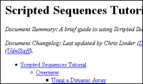 |
キャラクターをレベルに追加するには?
各エンジンでキャラクターに対して異なった操作をします。下にある２つの文書は、サードパーティのモデリングプログラムで最高のキャラクターが作成できるかだけではなく、UnrealEd にインポートする方法や非プレーヤーキャラクターがレベルを操作できるよう、レベルを設定する方法について説明します。| モデリング目次 - ここでは、正確にモデリング、テクスチャリング、リグ、およびUnrealEdにモデルをインポートするために必要な文書を紹介します。 | 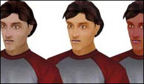 |
| ナビゲーションAI - ここでは、ボッツが従うナビゲーションパスの作成をするためパスノードの使用法を説明します。 また、その他に特殊目標、例えばドア、ジャンプパッド、ジャンプ先、リフトやはしごの設定について説明します。 | 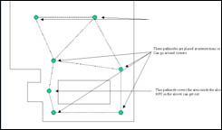 |